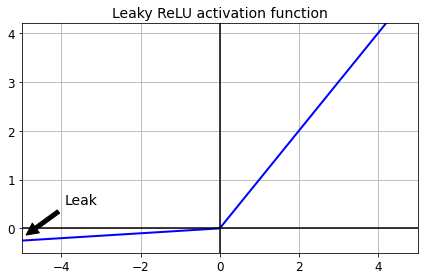
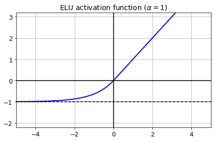
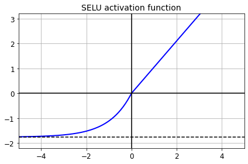
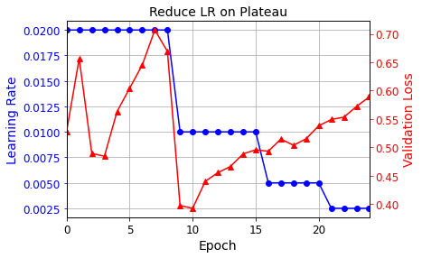

Training Neural Networks#
All credits to Aurelien Geron, adapted from his book “Hands-on Machine Learning”
Setup#
First, let’s import a few common modules, ensure MatplotLib plots figures inline and prepare a function to save the figures. We also check that Python 3.5 or later is installed (although Python 2.x may work, it is deprecated so we strongly recommend you use Python 3 instead), as well as Scikit-Learn ≥0.20 and TensorFlow ≥2.0.
# Python ≥3.5 is required
import sys
assert sys.version_info >= (3, 5)
# Scikit-Learn ≥0.20 is required
import sklearn
assert sklearn.__version__ >= "0.20"
try:
# %tensorflow_version only exists in Colab.
%tensorflow_version 2.x
except Exception:
pass
# TensorFlow ≥2.0 is required
import tensorflow as tf
from tensorflow import keras
assert tf.__version__ >= "2.0"
%load_ext tensorboard
# Common imports
import numpy as np
import os
# to make this notebook's output stable across runs
np.random.seed(42)
# To plot pretty figures
%matplotlib inline
import matplotlib as mpl
import matplotlib.pyplot as plt
mpl.rc('axes', labelsize=14)
mpl.rc('xtick', labelsize=12)
mpl.rc('ytick', labelsize=12)
# Where to save the figures
def image_path(fig_id):
return "images/"+fig_id
def save_fig(fig_id, tight_layout=True):
print("Saving figure", fig_id)
if tight_layout:
plt.tight_layout()
plt.savefig(image_path(fig_id) + ".png", format='png', dpi=300)
Xavier and He Initialization#
[name for name in dir(keras.initializers) if not name.startswith("_")]
['Constant',
'GlorotNormal',
'GlorotUniform',
'HeNormal',
'HeUniform',
'Identity',
'Initializer',
'LecunNormal',
'LecunUniform',
'Ones',
'Orthogonal',
'RandomNormal',
'RandomUniform',
'TruncatedNormal',
'VarianceScaling',
'Zeros',
'constant',
'deserialize',
'get',
'glorot_normal',
'glorot_uniform',
'he_normal',
'he_uniform',
'identity',
'lecun_normal',
'lecun_uniform',
'ones',
'orthogonal',
'random_normal',
'random_uniform',
'serialize',
'truncated_normal',
'variance_scaling',
'zeros']
## He initializer
keras.layers.Dense(10, activation="relu", kernel_initializer="he_normal")
<tensorflow.python.keras.layers.core.Dense at 0x10c1d1f50>
## personalize initializer
init = keras.initializers.VarianceScaling(scale=2., mode='fan_avg',
distribution='uniform')
keras.layers.Dense(10, activation="relu", kernel_initializer=init)
<tensorflow.python.keras.layers.core.Dense at 0x13433bf90>
Nonsaturating Activation Functions#
Leaky ReLU#
def leaky_relu(z, alpha=0.01):
return np.maximum(alpha*z, z)
z = np.linspace(-5, 5, 200)
plt.plot(z, leaky_relu(z, 0.05), "b-", linewidth=2)
plt.plot([-5, 5], [0, 0], 'k-')
plt.plot([0, 0], [-0.5, 4.2], 'k-')
plt.grid(True)
props = dict(facecolor='black', shrink=0.1)
plt.annotate('Leak', xytext=(-3.5, 0.5), xy=(-5, -0.2), arrowprops=props, fontsize=14, ha="center")
plt.title("Leaky ReLU activation function", fontsize=14)
plt.axis([-5, 5, -0.5, 4.2])
save_fig("leaky_relu_plot")
plt.show()
Saving figure leaky_relu_plot

[m for m in dir(keras.activations) if not m.startswith("_")]
['deserialize',
'elu',
'exponential',
'gelu',
'get',
'hard_sigmoid',
'linear',
'relu',
'selu',
'serialize',
'sigmoid',
'softmax',
'softplus',
'softsign',
'swish',
'tanh']
[m for m in dir(keras.layers) if "relu" in m.lower()]
['LeakyReLU', 'PReLU', 'ReLU', 'ThresholdedReLU']
Let’s train a neural network on Fashion MNIST using the Leaky ReLU:
(X_train_full, y_train_full), (X_test, y_test) = keras.datasets.fashion_mnist.load_data()
X_train_full = X_train_full / 255.0
X_test = X_test / 255.0
X_valid, X_train = X_train_full[:5000], X_train_full[5000:]
y_valid, y_train = y_train_full[:5000], y_train_full[5000:]
tf.random.set_seed(42)
np.random.seed(42)
model = keras.models.Sequential([
keras.layers.Flatten(input_shape=[28, 28]),
keras.layers.Dense(300, kernel_initializer="he_normal"),
keras.layers.LeakyReLU(),
keras.layers.Dense(100, kernel_initializer="he_normal"),
keras.layers.LeakyReLU(),
keras.layers.Dense(10, activation="softmax")
])
model.compile(loss="sparse_categorical_crossentropy",
optimizer=keras.optimizers.SGD(lr=1e-3),
metrics=["accuracy"])
history = model.fit(X_train, y_train, epochs=10,
validation_data=(X_valid, y_valid))
Epoch 1/10
1719/1719 [==============================] - 7s 4ms/step - loss: 1.6314 - accuracy: 0.5054 - val_loss: 0.8886 - val_accuracy: 0.7160
Epoch 2/10
1719/1719 [==============================] - 5s 3ms/step - loss: 0.8416 - accuracy: 0.7246 - val_loss: 0.7130 - val_accuracy: 0.7656
Epoch 3/10
1719/1719 [==============================] - 6s 4ms/step - loss: 0.7053 - accuracy: 0.7637 - val_loss: 0.6427 - val_accuracy: 0.7902
Epoch 4/10
1719/1719 [==============================] - 6s 3ms/step - loss: 0.6325 - accuracy: 0.7908 - val_loss: 0.5900 - val_accuracy: 0.8064
Epoch 5/10
1719/1719 [==============================] - 6s 3ms/step - loss: 0.5992 - accuracy: 0.8019 - val_loss: 0.5582 - val_accuracy: 0.8200
Epoch 6/10
1719/1719 [==============================] - 6s 4ms/step - loss: 0.5624 - accuracy: 0.8142 - val_loss: 0.5350 - val_accuracy: 0.8238
Epoch 7/10
1719/1719 [==============================] - 7s 4ms/step - loss: 0.5379 - accuracy: 0.8218 - val_loss: 0.5157 - val_accuracy: 0.8304
Epoch 8/10
1719/1719 [==============================] - 6s 3ms/step - loss: 0.5152 - accuracy: 0.8295 - val_loss: 0.5079 - val_accuracy: 0.8286
Epoch 9/10
1719/1719 [==============================] - 7s 4ms/step - loss: 0.5100 - accuracy: 0.8268 - val_loss: 0.4895 - val_accuracy: 0.8390
Epoch 10/10
1719/1719 [==============================] - 10s 6ms/step - loss: 0.4918 - accuracy: 0.8339 - val_loss: 0.4817 - val_accuracy: 0.8396
ELU#
def elu(z, alpha=1):
return np.where(z < 0, alpha * (np.exp(z) - 1), z)
plt.plot(z, elu(z), "b-", linewidth=2)
plt.plot([-5, 5], [0, 0], 'k-')
plt.plot([-5, 5], [-1, -1], 'k--')
plt.plot([0, 0], [-2.2, 3.2], 'k-')
plt.grid(True)
plt.title(r"ELU activation function ($\alpha=1$)", fontsize=14)
plt.axis([-5, 5, -2.2, 3.2])
save_fig("elu_plot")
plt.show()
Saving figure elu_plot

Implementing ELU in TensorFlow is trivial, just specify the activation function when building each layer:
keras.layers.Dense(10, activation="elu")
<tensorflow.python.keras.layers.core.Dense at 0x13473be90>
SELU#
This activation function was proposed in this great paper by Günter Klambauer, Thomas Unterthiner and Andreas Mayr, published in June 2017. Unfortunately, the self-normalizing property of the SELU activation function is easily broken: you cannot use ℓ1 or ℓ2 regularization, regular dropout, max-norm, skip connections or other non-sequential topologies (so recurrent neural networks won’t self-normalize). If you break self-normalization, SELU will not necessarily outperform other activation functions.
from scipy.special import erfc
# alpha and scale to self normalize with mean 0 and standard deviation 1
# (see equation 14 in the paper):
alpha_0_1 = -np.sqrt(2 / np.pi) / (erfc(1/np.sqrt(2)) * np.exp(1/2) - 1)
scale_0_1 = (1 - erfc(1 / np.sqrt(2)) * np.sqrt(np.e)) * np.sqrt(2 * np.pi) * (2 * erfc(np.sqrt(2))*np.e**2 + np.pi*erfc(1/np.sqrt(2))**2*np.e - 2*(2+np.pi)*erfc(1/np.sqrt(2))*np.sqrt(np.e)+np.pi+2)**(-1/2)
def selu(z, scale=scale_0_1, alpha=alpha_0_1):
return scale * elu(z, alpha)
plt.plot(z, selu(z), "b-", linewidth=2)
plt.plot([-5, 5], [0, 0], 'k-')
plt.plot([-5, 5], [-1.758, -1.758], 'k--')
plt.plot([0, 0], [-2.2, 3.2], 'k-')
plt.grid(True)
plt.title("SELU activation function", fontsize=14)
plt.axis([-5, 5, -2.2, 3.2])
save_fig("selu_plot")
plt.show()
Saving figure selu_plot

Using SELU is easy:
keras.layers.Dense(10, activation="selu",
kernel_initializer="lecun_normal")
<tensorflow.python.keras.layers.core.Dense at 0x1350b6a90>
Let’s create a neural net for Fashion MNIST with 100 hidden layers, using the SELU activation function:
np.random.seed(42)
tf.random.set_seed(42)
model = keras.models.Sequential()
model.add(keras.layers.Flatten(input_shape=[28, 28]))
model.add(keras.layers.Dense(300, activation="selu",
kernel_initializer="lecun_normal"))
for layer in range(99):
model.add(keras.layers.Dense(100, activation="selu",
kernel_initializer="lecun_normal"))
model.add(keras.layers.Dense(10, activation="softmax"))
model.compile(loss="sparse_categorical_crossentropy",
optimizer=keras.optimizers.SGD(lr=1e-3),
metrics=["accuracy"])
Now let’s train it. Do not forget to scale the inputs to mean 0 and standard deviation 1:
pixel_means = X_train.mean(axis=0, keepdims=True)
pixel_stds = X_train.std(axis=0, keepdims=True)
X_train_scaled = (X_train - pixel_means) / pixel_stds
X_valid_scaled = (X_valid - pixel_means) / pixel_stds
X_test_scaled = (X_test - pixel_means) / pixel_stds
history = model.fit(X_train_scaled, y_train, epochs=5,
validation_data=(X_valid_scaled, y_valid))
Epoch 1/5
1719/1719 [==============================] - 37s 18ms/step - loss: 1.6009 - accuracy: 0.3880 - val_loss: 0.7894 - val_accuracy: 0.7192
Epoch 2/5
1719/1719 [==============================] - 26s 15ms/step - loss: 0.8628 - accuracy: 0.6853 - val_loss: 0.6420 - val_accuracy: 0.7772
Epoch 3/5
1719/1719 [==============================] - 30s 18ms/step - loss: 0.6340 - accuracy: 0.7753 - val_loss: 0.5722 - val_accuracy: 0.7944
Epoch 4/5
1719/1719 [==============================] - 25s 15ms/step - loss: 0.5591 - accuracy: 0.8012 - val_loss: 0.5490 - val_accuracy: 0.8116
Epoch 5/5
1719/1719 [==============================] - 28s 16ms/step - loss: 0.5227 - accuracy: 0.8181 - val_loss: 0.5135 - val_accuracy: 0.8228
Now look at what happens if we try to use the ReLU activation function instead:
np.random.seed(42)
tf.random.set_seed(42)
model = keras.models.Sequential()
model.add(keras.layers.Flatten(input_shape=[28, 28]))
model.add(keras.layers.Dense(300, activation="relu", kernel_initializer="he_normal"))
for layer in range(99):
model.add(keras.layers.Dense(100, activation="relu", kernel_initializer="he_normal"))
model.add(keras.layers.Dense(10, activation="softmax"))
model.compile(loss="sparse_categorical_crossentropy",
optimizer=keras.optimizers.SGD(lr=1e-3),
metrics=["accuracy"])
history = model.fit(X_train_scaled, y_train, epochs=5,
validation_data=(X_valid_scaled, y_valid))
Epoch 1/5
1719/1719 [==============================] - 29s 14ms/step - loss: 2.0529 - accuracy: 0.1892 - val_loss: 1.3060 - val_accuracy: 0.3864
Epoch 2/5
1719/1719 [==============================] - 22s 13ms/step - loss: 1.2896 - accuracy: 0.4426 - val_loss: 1.1808 - val_accuracy: 0.4822
Epoch 3/5
1719/1719 [==============================] - 22s 13ms/step - loss: 0.9581 - accuracy: 0.6042 - val_loss: 0.8720 - val_accuracy: 0.6402
Epoch 4/5
1719/1719 [==============================] - 24s 14ms/step - loss: 0.8173 - accuracy: 0.6789 - val_loss: 0.7200 - val_accuracy: 0.7324
Epoch 5/5
1719/1719 [==============================] - 25s 14ms/step - loss: 0.7642 - accuracy: 0.7103 - val_loss: 0.7023 - val_accuracy: 0.7286
Not great at all, we suffered from the vanishing/exploding gradients problem.
Batch Normalization#
model = keras.models.Sequential([
keras.layers.Flatten(input_shape=[28, 28]),
keras.layers.BatchNormalization(),
keras.layers.Dense(300, activation="relu"),
keras.layers.BatchNormalization(),
keras.layers.Dense(100, activation="relu"),
keras.layers.BatchNormalization(),
keras.layers.Dense(10, activation="softmax")
])
model.summary()
Model: "sequential_3"
_________________________________________________________________
Layer (type) Output Shape Param #
=================================================================
flatten_3 (Flatten) (None, 784) 0
_________________________________________________________________
batch_normalization (BatchNo (None, 784) 3136
_________________________________________________________________
dense_209 (Dense) (None, 300) 235500
_________________________________________________________________
batch_normalization_1 (Batch (None, 300) 1200
_________________________________________________________________
dense_210 (Dense) (None, 100) 30100
_________________________________________________________________
batch_normalization_2 (Batch (None, 100) 400
_________________________________________________________________
dense_211 (Dense) (None, 10) 1010
=================================================================
Total params: 271,346
Trainable params: 268,978
Non-trainable params: 2,368
_________________________________________________________________
## these are the models related to the BN layers. The mean and
## variance are not trainable!!
bn1 = model.layers[1]
[(var.name, var.trainable) for var in bn1.variables]
[('batch_normalization/gamma:0', True),
('batch_normalization/beta:0', True),
('batch_normalization/moving_mean:0', False),
('batch_normalization/moving_variance:0', False)]
model.compile(loss="sparse_categorical_crossentropy",
optimizer=keras.optimizers.SGD(lr=1e-3),
metrics=["accuracy"])
history = model.fit(X_train, y_train, epochs=10,
validation_data=(X_valid, y_valid))
Epoch 1/10
1719/1719 [==============================] - 12s 6ms/step - loss: 1.2287 - accuracy: 0.5993 - val_loss: 0.5524 - val_accuracy: 0.8226
Epoch 2/10
1719/1719 [==============================] - 8s 5ms/step - loss: 0.5995 - accuracy: 0.7960 - val_loss: 0.4725 - val_accuracy: 0.8468
Epoch 3/10
1719/1719 [==============================] - 7s 4ms/step - loss: 0.5312 - accuracy: 0.8174 - val_loss: 0.4375 - val_accuracy: 0.8548
Epoch 4/10
1719/1719 [==============================] - 8s 5ms/step - loss: 0.4884 - accuracy: 0.8297 - val_loss: 0.4152 - val_accuracy: 0.8600
Epoch 5/10
1719/1719 [==============================] - 8s 5ms/step - loss: 0.4718 - accuracy: 0.8345 - val_loss: 0.3997 - val_accuracy: 0.8634
Epoch 6/10
1719/1719 [==============================] - 8s 5ms/step - loss: 0.4420 - accuracy: 0.8460 - val_loss: 0.3866 - val_accuracy: 0.8694
Epoch 7/10
1719/1719 [==============================] - 8s 5ms/step - loss: 0.4286 - accuracy: 0.8496 - val_loss: 0.3762 - val_accuracy: 0.8706
Epoch 8/10
1719/1719 [==============================] - 8s 5ms/step - loss: 0.4087 - accuracy: 0.8552 - val_loss: 0.3711 - val_accuracy: 0.8740
Epoch 9/10
1719/1719 [==============================] - 8s 5ms/step - loss: 0.4080 - accuracy: 0.8567 - val_loss: 0.3629 - val_accuracy: 0.8750
Epoch 10/10
1719/1719 [==============================] - 10s 6ms/step - loss: 0.3903 - accuracy: 0.8613 - val_loss: 0.3572 - val_accuracy: 0.8762
Sometimes applying BN before the activation function works better (there’s a debate on this topic). Moreover, the layer before a BatchNormalization layer does not need to have bias terms, since the BatchNormalization layer has some as well, it would be a waste of parameters, so you can set use_bias=False when creating those layers:
model = keras.models.Sequential([
keras.layers.Flatten(input_shape=[28, 28]),
keras.layers.BatchNormalization(),
keras.layers.Dense(300, use_bias=False),
keras.layers.BatchNormalization(),
keras.layers.Activation("relu"),
keras.layers.Dense(100, use_bias=False),
keras.layers.BatchNormalization(),
keras.layers.Activation("relu"),
keras.layers.Dense(10, activation="softmax")
])
model.compile(loss="sparse_categorical_crossentropy",
optimizer=keras.optimizers.SGD(lr=1e-3),
metrics=["accuracy"])
history = model.fit(X_train, y_train, epochs=10,
validation_data=(X_valid, y_valid))
Epoch 1/10
1719/1719 [==============================] - 10s 5ms/step - loss: 1.3677 - accuracy: 0.5605 - val_loss: 0.6767 - val_accuracy: 0.7812
Epoch 2/10
1719/1719 [==============================] - 9s 5ms/step - loss: 0.7136 - accuracy: 0.7702 - val_loss: 0.5566 - val_accuracy: 0.8180
Epoch 3/10
1719/1719 [==============================] - 9s 5ms/step - loss: 0.6123 - accuracy: 0.7989 - val_loss: 0.5007 - val_accuracy: 0.8362
Epoch 4/10
1719/1719 [==============================] - 9s 5ms/step - loss: 0.5547 - accuracy: 0.8149 - val_loss: 0.4666 - val_accuracy: 0.8450
Epoch 5/10
1719/1719 [==============================] - 9s 5ms/step - loss: 0.5255 - accuracy: 0.8231 - val_loss: 0.4433 - val_accuracy: 0.8534
Epoch 6/10
1719/1719 [==============================] - 8s 5ms/step - loss: 0.4947 - accuracy: 0.8327 - val_loss: 0.4263 - val_accuracy: 0.8548
Epoch 7/10
1719/1719 [==============================] - 7s 4ms/step - loss: 0.4736 - accuracy: 0.8386 - val_loss: 0.4130 - val_accuracy: 0.8568
Epoch 8/10
1719/1719 [==============================] - 8s 5ms/step - loss: 0.4550 - accuracy: 0.8444 - val_loss: 0.4035 - val_accuracy: 0.8606
Epoch 9/10
1719/1719 [==============================] - 8s 5ms/step - loss: 0.4495 - accuracy: 0.8439 - val_loss: 0.3943 - val_accuracy: 0.8640
Epoch 10/10
1719/1719 [==============================] - 8s 5ms/step - loss: 0.4333 - accuracy: 0.8495 - val_loss: 0.3875 - val_accuracy: 0.8664
Reusing Pretrained Layers#
Reusing a Keras model#
Let’s split the fashion MNIST training set in two:
X_train_A: all images of all items except for sandals and shirts (classes 5 and 6).X_train_B: a much smaller training set of just the first 200 images of sandals or shirts.
The validation set and the test set are also split this way, but without restricting the number of images.
We will train a model on set A (classification task with 8 classes), and try to reuse it to tackle set B (binary classification). We hope to transfer a little bit of knowledge from task A to task B, since classes in set A (sneakers, ankle boots, coats, t-shirts, etc.) are somewhat similar to classes in set B (sandals and shirts). However, since we are using Dense layers, only patterns that occur at the same location can be reused (in contrast, convolutional layers will transfer much better, since learned patterns can be detected anywhere on the image
def split_dataset(X, y):
y_5_or_6 = (y == 5) | (y == 6) # sandals or shirts
y_A = y[~y_5_or_6]
y_A[y_A > 6] -= 2 # class indices 7, 8, 9 should be moved to 5, 6, 7
y_B = (y[y_5_or_6] == 6).astype(np.float32) # binary classification task: is it a shirt (class 6)?
return ((X[~y_5_or_6], y_A),
(X[y_5_or_6], y_B))
(X_train_A, y_train_A), (X_train_B, y_train_B) = split_dataset(X_train, y_train)
(X_valid_A, y_valid_A), (X_valid_B, y_valid_B) = split_dataset(X_valid, y_valid)
(X_test_A, y_test_A), (X_test_B, y_test_B) = split_dataset(X_test, y_test)
X_train_B = X_train_B[:200]
y_train_B = y_train_B[:200]
X_train_A.shape
(43986, 28, 28)
X_train_B.shape
(200, 28, 28)
y_train_A[:30]
array([4, 0, 5, 7, 7, 7, 4, 4, 3, 4, 0, 1, 6, 3, 4, 3, 2, 6, 5, 3, 4, 5,
1, 3, 4, 2, 0, 6, 7, 1], dtype=uint8)
y_train_B[:30]
array([1., 1., 0., 0., 0., 0., 1., 1., 1., 0., 0., 1., 1., 0., 0., 0., 0.,
0., 0., 1., 1., 0., 0., 1., 1., 0., 1., 1., 1., 1.], dtype=float32)
tf.random.set_seed(42)
np.random.seed(42)
model_A = keras.models.Sequential()
model_A.add(keras.layers.Flatten(input_shape=[28, 28]))
for n_hidden in (300, 100, 50, 50, 50):
model_A.add(keras.layers.Dense(n_hidden, activation="selu"))
model_A.add(keras.layers.Dense(8, activation="softmax"))
model_A.compile(loss="sparse_categorical_crossentropy",
optimizer=keras.optimizers.SGD(lr=1e-3),
metrics=["accuracy"])
history = model_A.fit(X_train_A, y_train_A, epochs=20,
validation_data=(X_valid_A, y_valid_A))
Epoch 1/20
1375/1375 [==============================] - 5s 3ms/step - loss: 0.9249 - accuracy: 0.6994 - val_loss: 0.3896 - val_accuracy: 0.8662
Epoch 2/20
1375/1375 [==============================] - 4s 3ms/step - loss: 0.3651 - accuracy: 0.8745 - val_loss: 0.3288 - val_accuracy: 0.8827
Epoch 3/20
1375/1375 [==============================] - 4s 3ms/step - loss: 0.3182 - accuracy: 0.8896 - val_loss: 0.3014 - val_accuracy: 0.8986
Epoch 4/20
1375/1375 [==============================] - 5s 3ms/step - loss: 0.3049 - accuracy: 0.8953 - val_loss: 0.2896 - val_accuracy: 0.9011
Epoch 5/20
1375/1375 [==============================] - 5s 3ms/step - loss: 0.2804 - accuracy: 0.9028 - val_loss: 0.2775 - val_accuracy: 0.9061
Epoch 6/20
1375/1375 [==============================] - 5s 3ms/step - loss: 0.2701 - accuracy: 0.9078 - val_loss: 0.2736 - val_accuracy: 0.9066
Epoch 7/20
1375/1375 [==============================] - 6s 4ms/step - loss: 0.2626 - accuracy: 0.9092 - val_loss: 0.2718 - val_accuracy: 0.9091
Epoch 8/20
1375/1375 [==============================] - 5s 4ms/step - loss: 0.2609 - accuracy: 0.9120 - val_loss: 0.2589 - val_accuracy: 0.9143
Epoch 9/20
1375/1375 [==============================] - 6s 4ms/step - loss: 0.2557 - accuracy: 0.9109 - val_loss: 0.2560 - val_accuracy: 0.9143
Epoch 10/20
1375/1375 [==============================] - 5s 4ms/step - loss: 0.2511 - accuracy: 0.9136 - val_loss: 0.2542 - val_accuracy: 0.9160
Epoch 11/20
1375/1375 [==============================] - 5s 4ms/step - loss: 0.2431 - accuracy: 0.9168 - val_loss: 0.2495 - val_accuracy: 0.9148
Epoch 12/20
1375/1375 [==============================] - 5s 4ms/step - loss: 0.2422 - accuracy: 0.9168 - val_loss: 0.2513 - val_accuracy: 0.9123
Epoch 13/20
1375/1375 [==============================] - 5s 4ms/step - loss: 0.2360 - accuracy: 0.9178 - val_loss: 0.2444 - val_accuracy: 0.9158
Epoch 14/20
1375/1375 [==============================] - 5s 4ms/step - loss: 0.2266 - accuracy: 0.9232 - val_loss: 0.2414 - val_accuracy: 0.9173
Epoch 15/20
1375/1375 [==============================] - 5s 4ms/step - loss: 0.2225 - accuracy: 0.9235 - val_loss: 0.2448 - val_accuracy: 0.9195
Epoch 16/20
1375/1375 [==============================] - 5s 3ms/step - loss: 0.2261 - accuracy: 0.9215 - val_loss: 0.2386 - val_accuracy: 0.9188
Epoch 17/20
1375/1375 [==============================] - 4s 3ms/step - loss: 0.2191 - accuracy: 0.9250 - val_loss: 0.2409 - val_accuracy: 0.9175
Epoch 18/20
1375/1375 [==============================] - 4s 3ms/step - loss: 0.2171 - accuracy: 0.9255 - val_loss: 0.2427 - val_accuracy: 0.9153
Epoch 19/20
1375/1375 [==============================] - 5s 3ms/step - loss: 0.2180 - accuracy: 0.9247 - val_loss: 0.2329 - val_accuracy: 0.9195
Epoch 20/20
1375/1375 [==============================] - 5s 4ms/step - loss: 0.2112 - accuracy: 0.9268 - val_loss: 0.2333 - val_accuracy: 0.9210
model_A.save("my_model_A.h5")
model_B = keras.models.Sequential()
model_B.add(keras.layers.Flatten(input_shape=[28, 28]))
for n_hidden in (300, 100, 50, 50, 50):
model_B.add(keras.layers.Dense(n_hidden, activation="selu"))
model_B.add(keras.layers.Dense(1, activation="sigmoid"))
model_B.compile(loss="binary_crossentropy",
optimizer=keras.optimizers.SGD(lr=1e-3),
metrics=["accuracy"])
history = model_B.fit(X_train_B, y_train_B, epochs=20,
validation_data=(X_valid_B, y_valid_B))
Epoch 1/20
7/7 [==============================] - 1s 59ms/step - loss: 1.0360 - accuracy: 0.4975 - val_loss: 0.6314 - val_accuracy: 0.6004
Epoch 2/20
7/7 [==============================] - 0s 26ms/step - loss: 0.5883 - accuracy: 0.6971 - val_loss: 0.4784 - val_accuracy: 0.8529
Epoch 3/20
7/7 [==============================] - 0s 21ms/step - loss: 0.4380 - accuracy: 0.8854 - val_loss: 0.4102 - val_accuracy: 0.8945
Epoch 4/20
7/7 [==============================] - 0s 23ms/step - loss: 0.4021 - accuracy: 0.8712 - val_loss: 0.3647 - val_accuracy: 0.9178
Epoch 5/20
7/7 [==============================] - 0s 20ms/step - loss: 0.3361 - accuracy: 0.9348 - val_loss: 0.3300 - val_accuracy: 0.9320
Epoch 6/20
7/7 [==============================] - 0s 20ms/step - loss: 0.3113 - accuracy: 0.9233 - val_loss: 0.3019 - val_accuracy: 0.9402
Epoch 7/20
7/7 [==============================] - 0s 21ms/step - loss: 0.2817 - accuracy: 0.9299 - val_loss: 0.2804 - val_accuracy: 0.9422
Epoch 8/20
7/7 [==============================] - 0s 20ms/step - loss: 0.2632 - accuracy: 0.9379 - val_loss: 0.2606 - val_accuracy: 0.9473
Epoch 9/20
7/7 [==============================] - 0s 20ms/step - loss: 0.2373 - accuracy: 0.9481 - val_loss: 0.2428 - val_accuracy: 0.9523
Epoch 10/20
7/7 [==============================] - 0s 21ms/step - loss: 0.2229 - accuracy: 0.9657 - val_loss: 0.2281 - val_accuracy: 0.9544
Epoch 11/20
7/7 [==============================] - 0s 29ms/step - loss: 0.2155 - accuracy: 0.9590 - val_loss: 0.2150 - val_accuracy: 0.9584
Epoch 12/20
7/7 [==============================] - 0s 21ms/step - loss: 0.1834 - accuracy: 0.9738 - val_loss: 0.2036 - val_accuracy: 0.9584
Epoch 13/20
7/7 [==============================] - 0s 20ms/step - loss: 0.1671 - accuracy: 0.9828 - val_loss: 0.1931 - val_accuracy: 0.9615
Epoch 14/20
7/7 [==============================] - 0s 21ms/step - loss: 0.1527 - accuracy: 0.9915 - val_loss: 0.1838 - val_accuracy: 0.9635
Epoch 15/20
7/7 [==============================] - 0s 20ms/step - loss: 0.1595 - accuracy: 0.9904 - val_loss: 0.1746 - val_accuracy: 0.9686
Epoch 16/20
7/7 [==============================] - 0s 28ms/step - loss: 0.1473 - accuracy: 0.9937 - val_loss: 0.1674 - val_accuracy: 0.9686
Epoch 17/20
7/7 [==============================] - 0s 28ms/step - loss: 0.1412 - accuracy: 0.9944 - val_loss: 0.1604 - val_accuracy: 0.9706
Epoch 18/20
7/7 [==============================] - 0s 20ms/step - loss: 0.1242 - accuracy: 0.9931 - val_loss: 0.1539 - val_accuracy: 0.9706
Epoch 19/20
7/7 [==============================] - 0s 23ms/step - loss: 0.1224 - accuracy: 0.9931 - val_loss: 0.1482 - val_accuracy: 0.9716
Epoch 20/20
7/7 [==============================] - 0s 21ms/step - loss: 0.1096 - accuracy: 0.9912 - val_loss: 0.1431 - val_accuracy: 0.9716
model_B.summary()
Model: "sequential_6"
_________________________________________________________________
Layer (type) Output Shape Param #
=================================================================
flatten_6 (Flatten) (None, 784) 0
_________________________________________________________________
dense_221 (Dense) (None, 300) 235500
_________________________________________________________________
dense_222 (Dense) (None, 100) 30100
_________________________________________________________________
dense_223 (Dense) (None, 50) 5050
_________________________________________________________________
dense_224 (Dense) (None, 50) 2550
_________________________________________________________________
dense_225 (Dense) (None, 50) 2550
_________________________________________________________________
dense_226 (Dense) (None, 1) 51
=================================================================
Total params: 275,801
Trainable params: 275,801
Non-trainable params: 0
_________________________________________________________________
model_A = keras.models.load_model("my_model_A.h5")
## we reuse all the layers, except for the output one!
model_B_on_A = keras.models.Sequential(model_A.layers[:-1])
model_B_on_A.add(keras.layers.Dense(1, activation="sigmoid"))
## first train for the output layer's weights
## to make some sense!
for layer in model_B_on_A.layers[:-1]:
layer.trainable = False
model_B_on_A.compile(loss="binary_crossentropy",
optimizer=keras.optimizers.SGD(lr=1e-3),
metrics=["accuracy"])
history = model_B_on_A.fit(X_train_B, y_train_B, epochs=4,
validation_data=(X_valid_B, y_valid_B))
## unfreze the layers!
for layer in model_B_on_A.layers[:-1]:
layer.trainable = True
## note we reduce the learning rate
model_B_on_A.compile(loss="binary_crossentropy",
optimizer=keras.optimizers.SGD(lr=1e-3),
metrics=["accuracy"])
history = model_B_on_A.fit(X_train_B, y_train_B, epochs=16,
validation_data=(X_valid_B, y_valid_B))
Epoch 1/4
7/7 [==============================] - 1s 59ms/step - loss: 0.6116 - accuracy: 0.6233 - val_loss: 0.5816 - val_accuracy: 0.6400
Epoch 2/4
7/7 [==============================] - 0s 21ms/step - loss: 0.5515 - accuracy: 0.6646 - val_loss: 0.5443 - val_accuracy: 0.6826
Epoch 3/4
7/7 [==============================] - 0s 23ms/step - loss: 0.4867 - accuracy: 0.7531 - val_loss: 0.5124 - val_accuracy: 0.7110
Epoch 4/4
7/7 [==============================] - 0s 26ms/step - loss: 0.4872 - accuracy: 0.7355 - val_loss: 0.4839 - val_accuracy: 0.7353
Epoch 1/16
7/7 [==============================] - 1s 66ms/step - loss: 0.4359 - accuracy: 0.7774 - val_loss: 0.3455 - val_accuracy: 0.8661
Epoch 2/16
7/7 [==============================] - 0s 22ms/step - loss: 0.2962 - accuracy: 0.9143 - val_loss: 0.2602 - val_accuracy: 0.9300
Epoch 3/16
7/7 [==============================] - 0s 20ms/step - loss: 0.2030 - accuracy: 0.9777 - val_loss: 0.2111 - val_accuracy: 0.9554
Epoch 4/16
7/7 [==============================] - 0s 22ms/step - loss: 0.1751 - accuracy: 0.9789 - val_loss: 0.1792 - val_accuracy: 0.9696
Epoch 5/16
7/7 [==============================] - 0s 21ms/step - loss: 0.1348 - accuracy: 0.9809 - val_loss: 0.1563 - val_accuracy: 0.9757
Epoch 6/16
7/7 [==============================] - 0s 20ms/step - loss: 0.1172 - accuracy: 0.9973 - val_loss: 0.1395 - val_accuracy: 0.9797
Epoch 7/16
7/7 [==============================] - 0s 20ms/step - loss: 0.1136 - accuracy: 0.9931 - val_loss: 0.1267 - val_accuracy: 0.9848
Epoch 8/16
7/7 [==============================] - 0s 22ms/step - loss: 0.1000 - accuracy: 0.9931 - val_loss: 0.1165 - val_accuracy: 0.9858
Epoch 9/16
7/7 [==============================] - 0s 21ms/step - loss: 0.0835 - accuracy: 1.0000 - val_loss: 0.1067 - val_accuracy: 0.9888
Epoch 10/16
7/7 [==============================] - 0s 22ms/step - loss: 0.0777 - accuracy: 1.0000 - val_loss: 0.1001 - val_accuracy: 0.9899
Epoch 11/16
7/7 [==============================] - 0s 20ms/step - loss: 0.0690 - accuracy: 1.0000 - val_loss: 0.0941 - val_accuracy: 0.9899
Epoch 12/16
7/7 [==============================] - 0s 22ms/step - loss: 0.0720 - accuracy: 1.0000 - val_loss: 0.0890 - val_accuracy: 0.9899
Epoch 13/16
7/7 [==============================] - 0s 20ms/step - loss: 0.0567 - accuracy: 1.0000 - val_loss: 0.0841 - val_accuracy: 0.9899
Epoch 14/16
7/7 [==============================] - 0s 23ms/step - loss: 0.0495 - accuracy: 1.0000 - val_loss: 0.0804 - val_accuracy: 0.9899
Epoch 15/16
7/7 [==============================] - 0s 23ms/step - loss: 0.0545 - accuracy: 1.0000 - val_loss: 0.0770 - val_accuracy: 0.9899
Epoch 16/16
7/7 [==============================] - 0s 20ms/step - loss: 0.0473 - accuracy: 1.0000 - val_loss: 0.0740 - val_accuracy: 0.9899
So, what’s the final verdict?
model_B.evaluate(X_test_B, y_test_B)
63/63 [==============================] - 0s 2ms/step - loss: 0.1408 - accuracy: 0.9705
[0.1408407837152481, 0.9704999923706055]
model_B_on_A.evaluate(X_test_B, y_test_B)
63/63 [==============================] - 0s 2ms/step - loss: 0.0683 - accuracy: 0.9935
[0.06834527105093002, 0.9934999942779541]
Great! We got quite a bit of transfer: the error rate dropped by a factor of 4.5!
(100 - 97.05) / (100 - 99.35)
4.538461538461503
Faster Optimizers#
Momentum optimization#
optimizer = keras.optimizers.SGD(lr=0.001, momentum=0.9)
Nesterov Accelerated Gradient#
optimizer = keras.optimizers.SGD(lr=0.001, momentum=0.9, nesterov=True)
AdaGrad#
optimizer = keras.optimizers.Adagrad(lr=0.001)
RMSProp#
optimizer = keras.optimizers.RMSprop(lr=0.001, rho=0.9)
Adam Optimization#
optimizer = keras.optimizers.Adam(lr=0.001, beta_1=0.9, beta_2=0.999)
Adamax Optimization#
optimizer = keras.optimizers.Adamax(lr=0.001, beta_1=0.9, beta_2=0.999)
Nadam Optimization#
optimizer = keras.optimizers.Nadam(lr=0.001, beta_1=0.9, beta_2=0.999)
Learning Rate Scheduling#
Performance Scheduling#
tf.random.set_seed(42)
np.random.seed(42)
lr_scheduler = keras.callbacks.ReduceLROnPlateau(factor=0.5, patience=5)
model = keras.models.Sequential([
keras.layers.Flatten(input_shape=[28, 28]),
keras.layers.Dense(300, activation="selu", kernel_initializer="lecun_normal"),
keras.layers.Dense(100, activation="selu", kernel_initializer="lecun_normal"),
keras.layers.Dense(10, activation="softmax")
])
optimizer = keras.optimizers.SGD(lr=0.02, momentum=0.9)
model.compile(loss="sparse_categorical_crossentropy", optimizer=optimizer, metrics=["accuracy"])
n_epochs = 25
history = model.fit(X_train_scaled, y_train, epochs=n_epochs,
validation_data=(X_valid_scaled, y_valid),
callbacks=[lr_scheduler])
Epoch 1/25
1719/1719 [==============================] - 7s 4ms/step - loss: 0.7101 - accuracy: 0.7775 - val_loss: 0.5282 - val_accuracy: 0.8466
Epoch 2/25
1719/1719 [==============================] - 6s 4ms/step - loss: 0.4875 - accuracy: 0.8397 - val_loss: 0.6569 - val_accuracy: 0.8186
Epoch 3/25
1719/1719 [==============================] - 8s 5ms/step - loss: 0.5056 - accuracy: 0.8426 - val_loss: 0.4895 - val_accuracy: 0.8514
Epoch 4/25
1719/1719 [==============================] - 7s 4ms/step - loss: 0.4902 - accuracy: 0.8498 - val_loss: 0.4845 - val_accuracy: 0.8440
Epoch 5/25
1719/1719 [==============================] - 7s 4ms/step - loss: 0.5244 - accuracy: 0.8446 - val_loss: 0.5630 - val_accuracy: 0.8344
Epoch 6/25
1719/1719 [==============================] - 7s 4ms/step - loss: 0.4842 - accuracy: 0.8579 - val_loss: 0.6042 - val_accuracy: 0.8498
Epoch 7/25
1719/1719 [==============================] - 7s 4ms/step - loss: 0.5081 - accuracy: 0.8570 - val_loss: 0.6452 - val_accuracy: 0.8256
Epoch 8/25
1719/1719 [==============================] - 7s 4ms/step - loss: 0.4872 - accuracy: 0.8603 - val_loss: 0.7068 - val_accuracy: 0.8344
Epoch 9/25
1719/1719 [==============================] - 7s 4ms/step - loss: 0.4970 - accuracy: 0.8616 - val_loss: 0.6691 - val_accuracy: 0.8370
Epoch 10/25
1719/1719 [==============================] - 6s 3ms/step - loss: 0.3176 - accuracy: 0.8946 - val_loss: 0.3976 - val_accuracy: 0.8780
Epoch 11/25
1719/1719 [==============================] - 5s 3ms/step - loss: 0.2392 - accuracy: 0.9125 - val_loss: 0.3928 - val_accuracy: 0.8866
Epoch 12/25
1719/1719 [==============================] - 5s 3ms/step - loss: 0.2223 - accuracy: 0.9190 - val_loss: 0.4403 - val_accuracy: 0.8786
Epoch 13/25
1719/1719 [==============================] - 7s 4ms/step - loss: 0.2049 - accuracy: 0.9256 - val_loss: 0.4556 - val_accuracy: 0.8840
Epoch 14/25
1719/1719 [==============================] - 6s 3ms/step - loss: 0.1871 - accuracy: 0.9302 - val_loss: 0.4665 - val_accuracy: 0.8804
Epoch 15/25
1719/1719 [==============================] - 7s 4ms/step - loss: 0.1866 - accuracy: 0.9325 - val_loss: 0.4885 - val_accuracy: 0.8874
Epoch 16/25
1719/1719 [==============================] - 6s 4ms/step - loss: 0.1740 - accuracy: 0.9348 - val_loss: 0.4958 - val_accuracy: 0.8830
Epoch 17/25
1719/1719 [==============================] - 6s 3ms/step - loss: 0.1211 - accuracy: 0.9522 - val_loss: 0.4933 - val_accuracy: 0.8894
Epoch 18/25
1719/1719 [==============================] - 6s 3ms/step - loss: 0.1037 - accuracy: 0.9587 - val_loss: 0.5147 - val_accuracy: 0.8910
Epoch 19/25
1719/1719 [==============================] - 6s 3ms/step - loss: 0.0985 - accuracy: 0.9616 - val_loss: 0.5038 - val_accuracy: 0.8956
Epoch 20/25
1719/1719 [==============================] - 7s 4ms/step - loss: 0.0912 - accuracy: 0.9652 - val_loss: 0.5152 - val_accuracy: 0.8956
Epoch 21/25
1719/1719 [==============================] - 7s 4ms/step - loss: 0.0865 - accuracy: 0.9655 - val_loss: 0.5381 - val_accuracy: 0.8894
Epoch 22/25
1719/1719 [==============================] - 7s 4ms/step - loss: 0.0721 - accuracy: 0.9722 - val_loss: 0.5492 - val_accuracy: 0.8942
Epoch 23/25
1719/1719 [==============================] - 10s 6ms/step - loss: 0.0631 - accuracy: 0.9764 - val_loss: 0.5534 - val_accuracy: 0.8942
Epoch 24/25
1719/1719 [==============================] - 7s 4ms/step - loss: 0.0592 - accuracy: 0.9790 - val_loss: 0.5722 - val_accuracy: 0.8936
Epoch 25/25
1719/1719 [==============================] - 7s 4ms/step - loss: 0.0583 - accuracy: 0.9784 - val_loss: 0.5889 - val_accuracy: 0.8926
plt.plot(history.epoch, history.history["lr"], "bo-")
plt.xlabel("Epoch")
plt.ylabel("Learning Rate", color='b')
plt.tick_params('y', colors='b')
plt.gca().set_xlim(0, n_epochs - 1)
plt.grid(True)
ax2 = plt.gca().twinx()
ax2.plot(history.epoch, history.history["val_loss"], "r^-")
ax2.set_ylabel('Validation Loss', color='r')
ax2.tick_params('y', colors='r')
plt.title("Reduce LR on Plateau", fontsize=14)
plt.show()

tf.keras schedulers#
model = keras.models.Sequential([
keras.layers.Flatten(input_shape=[28, 28]),
keras.layers.Dense(300, activation="selu", kernel_initializer="lecun_normal"),
keras.layers.Dense(100, activation="selu", kernel_initializer="lecun_normal"),
keras.layers.Dense(10, activation="softmax")
])
s = 20 * len(X_train) // 32 # number of steps in 20 epochs (batch size = 32)
learning_rate = keras.optimizers.schedules.ExponentialDecay(0.01, s, 0.1)
optimizer = keras.optimizers.SGD(learning_rate)
model.compile(loss="sparse_categorical_crossentropy", optimizer=optimizer, metrics=["accuracy"])
n_epochs = 25
history = model.fit(X_train_scaled, y_train, epochs=n_epochs,
validation_data=(X_valid_scaled, y_valid))
Epoch 1/25
1719/1719 [==============================] - 8s 4ms/step - loss: 0.5995 - accuracy: 0.7923 - val_loss: 0.4092 - val_accuracy: 0.8604
Epoch 2/25
1719/1719 [==============================] - 6s 3ms/step - loss: 0.3890 - accuracy: 0.8613 - val_loss: 0.3738 - val_accuracy: 0.8692
Epoch 3/25
1719/1719 [==============================] - 5s 3ms/step - loss: 0.3530 - accuracy: 0.8777 - val_loss: 0.3733 - val_accuracy: 0.8686
Epoch 4/25
1719/1719 [==============================] - 5s 3ms/step - loss: 0.3297 - accuracy: 0.8814 - val_loss: 0.3493 - val_accuracy: 0.8804
Epoch 5/25
1719/1719 [==============================] - 5s 3ms/step - loss: 0.3177 - accuracy: 0.8867 - val_loss: 0.3429 - val_accuracy: 0.8796
Epoch 6/25
1719/1719 [==============================] - 5s 3ms/step - loss: 0.2929 - accuracy: 0.8950 - val_loss: 0.3415 - val_accuracy: 0.8810
Epoch 7/25
1719/1719 [==============================] - 5s 3ms/step - loss: 0.2853 - accuracy: 0.8987 - val_loss: 0.3354 - val_accuracy: 0.8820
Epoch 8/25
1719/1719 [==============================] - 5s 3ms/step - loss: 0.2713 - accuracy: 0.9038 - val_loss: 0.3366 - val_accuracy: 0.8818
Epoch 9/25
1719/1719 [==============================] - 6s 3ms/step - loss: 0.2713 - accuracy: 0.9044 - val_loss: 0.3265 - val_accuracy: 0.8854
Epoch 10/25
1719/1719 [==============================] - 5s 3ms/step - loss: 0.2570 - accuracy: 0.9084 - val_loss: 0.3240 - val_accuracy: 0.8852
Epoch 11/25
1719/1719 [==============================] - 5s 3ms/step - loss: 0.2501 - accuracy: 0.9115 - val_loss: 0.3251 - val_accuracy: 0.8866
Epoch 12/25
1719/1719 [==============================] - 5s 3ms/step - loss: 0.2452 - accuracy: 0.9150 - val_loss: 0.3300 - val_accuracy: 0.8808
Epoch 13/25
1719/1719 [==============================] - 6s 3ms/step - loss: 0.2409 - accuracy: 0.9154 - val_loss: 0.3216 - val_accuracy: 0.8868
Epoch 14/25
1719/1719 [==============================] - 5s 3ms/step - loss: 0.2379 - accuracy: 0.9159 - val_loss: 0.3222 - val_accuracy: 0.8858
Epoch 15/25
1719/1719 [==============================] - 6s 4ms/step - loss: 0.2377 - accuracy: 0.9169 - val_loss: 0.3209 - val_accuracy: 0.8868
Epoch 16/25
1719/1719 [==============================] - 6s 4ms/step - loss: 0.2316 - accuracy: 0.9196 - val_loss: 0.3185 - val_accuracy: 0.8890
Epoch 17/25
1719/1719 [==============================] - 6s 4ms/step - loss: 0.2264 - accuracy: 0.9213 - val_loss: 0.3197 - val_accuracy: 0.8892
Epoch 18/25
1719/1719 [==============================] - 6s 4ms/step - loss: 0.2283 - accuracy: 0.9188 - val_loss: 0.3168 - val_accuracy: 0.8894
Epoch 19/25
1719/1719 [==============================] - 7s 4ms/step - loss: 0.2284 - accuracy: 0.9205 - val_loss: 0.3197 - val_accuracy: 0.8886
Epoch 20/25
1719/1719 [==============================] - 6s 4ms/step - loss: 0.2287 - accuracy: 0.9217 - val_loss: 0.3169 - val_accuracy: 0.8902
Epoch 21/25
1719/1719 [==============================] - 6s 4ms/step - loss: 0.2264 - accuracy: 0.9211 - val_loss: 0.3179 - val_accuracy: 0.8902
Epoch 22/25
1719/1719 [==============================] - 6s 3ms/step - loss: 0.2257 - accuracy: 0.9202 - val_loss: 0.3163 - val_accuracy: 0.8910
Epoch 23/25
1719/1719 [==============================] - 5s 3ms/step - loss: 0.2222 - accuracy: 0.9230 - val_loss: 0.3170 - val_accuracy: 0.8898
Epoch 24/25
1719/1719 [==============================] - 5s 3ms/step - loss: 0.2181 - accuracy: 0.9244 - val_loss: 0.3166 - val_accuracy: 0.8906
Epoch 25/25
1719/1719 [==============================] - 5s 3ms/step - loss: 0.2221 - accuracy: 0.9231 - val_loss: 0.3165 - val_accuracy: 0.8904
For piecewise constant scheduling, try this:
batch_size = 32
import math
n_steps_per_epoch = math.ceil(len(X_train) / batch_size)
learning_rate = keras.optimizers.schedules.PiecewiseConstantDecay(
boundaries=[5. * n_steps_per_epoch, 15. * n_steps_per_epoch],
values=[0.01, 0.005, 0.001])
1Cycle scheduling#
K = keras.backend
print(K)
class OneCycleScheduler(keras.callbacks.Callback):
def __init__(self, iterations, max_rate, start_rate=None,
last_iterations=None, last_rate=None):
self.iterations = iterations
self.max_rate = max_rate
self.start_rate = start_rate or max_rate / 10
self.last_iterations = last_iterations or iterations // 10 + 1
self.half_iteration = (iterations - self.last_iterations) // 2
self.last_rate = last_rate or self.start_rate / 1000
self.iteration = 0
def _interpolate(self, iter1, iter2, rate1, rate2):
return ((rate2 - rate1) * (self.iteration - iter1)
/ (iter2 - iter1) + rate1)
def on_batch_begin(self, batch, logs):
if self.iteration < self.half_iteration:
rate = self._interpolate(0, self.half_iteration, self.start_rate, self.max_rate)
elif self.iteration < 2 * self.half_iteration:
rate = self._interpolate(self.half_iteration, 2 * self.half_iteration,
self.max_rate, self.start_rate)
else:
rate = self._interpolate(2 * self.half_iteration, self.iterations,
self.start_rate, self.last_rate)
self.iteration += 1
K.set_value(self.model.optimizer.lr, rate)
<module 'tensorflow.keras.backend' from '/Users/Xabier/jupyter/lib/python3.7/site-packages/tensorflow/keras/backend/__init__.py'>
model = keras.models.Sequential([
keras.layers.Flatten(input_shape=[28, 28]),
keras.layers.Dense(300, activation="selu", kernel_initializer="lecun_normal"),
keras.layers.Dense(100, activation="selu", kernel_initializer="lecun_normal"),
keras.layers.Dense(10, activation="softmax")
])
model.compile(loss="sparse_categorical_crossentropy",
optimizer=keras.optimizers.SGD(lr=1e-3),
metrics=["accuracy"])
n_epochs = 25
batch_size = 128
onecycle = OneCycleScheduler(math.ceil(len(X_train) / batch_size) * n_epochs, max_rate=0.05)
history = model.fit(X_train_scaled, y_train, epochs=n_epochs, batch_size=batch_size,
validation_data=(X_valid_scaled, y_valid),
callbacks=[onecycle])
Epoch 1/25
430/430 [==============================] - 3s 7ms/step - loss: 0.8596 - accuracy: 0.7048 - val_loss: 0.4767 - val_accuracy: 0.8394
Epoch 2/25
430/430 [==============================] - 3s 7ms/step - loss: 0.4704 - accuracy: 0.8337 - val_loss: 0.4237 - val_accuracy: 0.8532
Epoch 3/25
430/430 [==============================] - 3s 6ms/step - loss: 0.4158 - accuracy: 0.8552 - val_loss: 0.4095 - val_accuracy: 0.8592
Epoch 4/25
430/430 [==============================] - 3s 6ms/step - loss: 0.3876 - accuracy: 0.8611 - val_loss: 0.3849 - val_accuracy: 0.8682
Epoch 5/25
430/430 [==============================] - 3s 6ms/step - loss: 0.3718 - accuracy: 0.8687 - val_loss: 0.3724 - val_accuracy: 0.8702
Epoch 6/25
430/430 [==============================] - 3s 6ms/step - loss: 0.3393 - accuracy: 0.8766 - val_loss: 0.3702 - val_accuracy: 0.8732
Epoch 7/25
430/430 [==============================] - 3s 6ms/step - loss: 0.3314 - accuracy: 0.8820 - val_loss: 0.3588 - val_accuracy: 0.8758
Epoch 8/25
430/430 [==============================] - 3s 6ms/step - loss: 0.3079 - accuracy: 0.8887 - val_loss: 0.3989 - val_accuracy: 0.8584
Epoch 9/25
430/430 [==============================] - 2s 5ms/step - loss: 0.3053 - accuracy: 0.8891 - val_loss: 0.3447 - val_accuracy: 0.8758
Epoch 10/25
430/430 [==============================] - 2s 5ms/step - loss: 0.2860 - accuracy: 0.8963 - val_loss: 0.3363 - val_accuracy: 0.8818
Epoch 11/25
430/430 [==============================] - 2s 6ms/step - loss: 0.2770 - accuracy: 0.8976 - val_loss: 0.3487 - val_accuracy: 0.8792
Epoch 12/25
430/430 [==============================] - 2s 6ms/step - loss: 0.2638 - accuracy: 0.9039 - val_loss: 0.3705 - val_accuracy: 0.8698
Epoch 13/25
430/430 [==============================] - 3s 6ms/step - loss: 0.2467 - accuracy: 0.9117 - val_loss: 0.3308 - val_accuracy: 0.8850
Epoch 14/25
430/430 [==============================] - 2s 6ms/step - loss: 0.2342 - accuracy: 0.9147 - val_loss: 0.3406 - val_accuracy: 0.8810
Epoch 15/25
430/430 [==============================] - 2s 5ms/step - loss: 0.2255 - accuracy: 0.9189 - val_loss: 0.3292 - val_accuracy: 0.8836
Epoch 16/25
430/430 [==============================] - 2s 6ms/step - loss: 0.2106 - accuracy: 0.9242 - val_loss: 0.3274 - val_accuracy: 0.8844
Epoch 17/25
430/430 [==============================] - 3s 6ms/step - loss: 0.1967 - accuracy: 0.9298 - val_loss: 0.3328 - val_accuracy: 0.8870
Epoch 18/25
430/430 [==============================] - 3s 6ms/step - loss: 0.1949 - accuracy: 0.9311 - val_loss: 0.3229 - val_accuracy: 0.8902
Epoch 19/25
430/430 [==============================] - 3s 6ms/step - loss: 0.1873 - accuracy: 0.9345 - val_loss: 0.3224 - val_accuracy: 0.8904
Epoch 20/25
430/430 [==============================] - 3s 7ms/step - loss: 0.1845 - accuracy: 0.9358 - val_loss: 0.3213 - val_accuracy: 0.8874
Epoch 21/25
430/430 [==============================] - 3s 7ms/step - loss: 0.1758 - accuracy: 0.9411 - val_loss: 0.3187 - val_accuracy: 0.8938
Epoch 22/25
430/430 [==============================] - 3s 6ms/step - loss: 0.1704 - accuracy: 0.9410 - val_loss: 0.3162 - val_accuracy: 0.8924
Epoch 23/25
430/430 [==============================] - 3s 6ms/step - loss: 0.1653 - accuracy: 0.9450 - val_loss: 0.3167 - val_accuracy: 0.8940
Epoch 24/25
430/430 [==============================] - 3s 6ms/step - loss: 0.1604 - accuracy: 0.9471 - val_loss: 0.3163 - val_accuracy: 0.8924
Epoch 25/25
430/430 [==============================] - 3s 6ms/step - loss: 0.1630 - accuracy: 0.9454 - val_loss: 0.3153 - val_accuracy: 0.8940
Avoiding Overfitting Through Regularization#
\(\ell_1\) and \(\ell_2\) regularization#
layer = keras.layers.Dense(100, activation="elu",
kernel_initializer="he_normal",
kernel_regularizer=keras.regularizers.l2(0.01))
# or l1(0.1) for ℓ1 regularization with a factor or 0.1
# or l1_l2(0.1, 0.01) for both ℓ1 and ℓ2 regularization, with factors 0.1 and 0.01 respectively
model = keras.models.Sequential([
keras.layers.Flatten(input_shape=[28, 28]),
keras.layers.Dense(300, activation="elu",
kernel_initializer="he_normal",
kernel_regularizer=keras.regularizers.l2(0.01)),
keras.layers.Dense(100, activation="elu",
kernel_initializer="he_normal",
kernel_regularizer=keras.regularizers.l2(0.01)),
keras.layers.Dense(10, activation="softmax",
kernel_regularizer=keras.regularizers.l2(0.01))
])
model.compile(loss="sparse_categorical_crossentropy", optimizer="nadam", metrics=["accuracy"])
n_epochs = 2
history = model.fit(X_train_scaled, y_train, epochs=n_epochs,
validation_data=(X_valid_scaled, y_valid))
Epoch 1/2
1719/1719 [==============================] - 13s 7ms/step - loss: 3.3713 - accuracy: 0.7922 - val_loss: 0.7200 - val_accuracy: 0.8324
Epoch 2/2
1719/1719 [==============================] - 12s 7ms/step - loss: 0.7285 - accuracy: 0.8247 - val_loss: 0.6826 - val_accuracy: 0.8376
from functools import partial
## Python functionality
## avoids having to repeat the same type of layers everytime
RegularizedDense = partial(keras.layers.Dense,
activation="elu",
kernel_initializer="he_normal",
kernel_regularizer=keras.regularizers.l2(0.01))
model = keras.models.Sequential([
keras.layers.Flatten(input_shape=[28, 28]),
RegularizedDense(300),
RegularizedDense(100),
RegularizedDense(10, activation="softmax")
])
model.compile(loss="sparse_categorical_crossentropy", optimizer="nadam", metrics=["accuracy"])
n_epochs = 2
history = model.fit(X_train_scaled, y_train, epochs=n_epochs,
validation_data=(X_valid_scaled, y_valid))
Epoch 1/2
1719/1719 [==============================] - 13s 7ms/step - loss: 3.3041 - accuracy: 0.7912 - val_loss: 0.7156 - val_accuracy: 0.8318
Epoch 2/2
1719/1719 [==============================] - 11s 6ms/step - loss: 0.7266 - accuracy: 0.8256 - val_loss: 0.6821 - val_accuracy: 0.8370
Dropout#
model = keras.models.Sequential([
keras.layers.Flatten(input_shape=[28, 28]),
keras.layers.Dropout(rate=0.2),
keras.layers.Dense(300, activation="elu", kernel_initializer="he_normal"),
keras.layers.Dropout(rate=0.2),
keras.layers.Dense(100, activation="elu", kernel_initializer="he_normal"),
keras.layers.Dropout(rate=0.2),
keras.layers.Dense(10, activation="softmax")
])
model.compile(loss="sparse_categorical_crossentropy", optimizer="nadam", metrics=["accuracy"])
n_epochs = 2
history = model.fit(X_train_scaled, y_train, epochs=n_epochs,
validation_data=(X_valid_scaled, y_valid))
Epoch 1/2
1719/1719 [==============================] - 15s 8ms/step - loss: 0.7216 - accuracy: 0.7648 - val_loss: 0.3605 - val_accuracy: 0.8646
Epoch 2/2
1719/1719 [==============================] - 11s 7ms/step - loss: 0.4274 - accuracy: 0.8413 - val_loss: 0.3422 - val_accuracy: 0.8686
Alpha Dropout#
tf.random.set_seed(42)
np.random.seed(42)
## specifically when we use selu!
model = keras.models.Sequential([
keras.layers.Flatten(input_shape=[28, 28]),
keras.layers.AlphaDropout(rate=0.2),
keras.layers.Dense(300, activation="selu", kernel_initializer="lecun_normal"),
keras.layers.AlphaDropout(rate=0.2),
keras.layers.Dense(100, activation="selu", kernel_initializer="lecun_normal"),
keras.layers.AlphaDropout(rate=0.2),
keras.layers.Dense(10, activation="softmax")
])
optimizer = keras.optimizers.SGD(lr=0.01, momentum=0.9, nesterov=True)
model.compile(loss="sparse_categorical_crossentropy", optimizer=optimizer, metrics=["accuracy"])
n_epochs = 20
history = model.fit(X_train_scaled, y_train, epochs=n_epochs,
validation_data=(X_valid_scaled, y_valid))
Epoch 1/20
1719/1719 [==============================] - 8s 4ms/step - loss: 0.8023 - accuracy: 0.7146 - val_loss: 0.5778 - val_accuracy: 0.8446
Epoch 2/20
1719/1719 [==============================] - 7s 4ms/step - loss: 0.5662 - accuracy: 0.7903 - val_loss: 0.5161 - val_accuracy: 0.8518
Epoch 3/20
1719/1719 [==============================] - 7s 4ms/step - loss: 0.5260 - accuracy: 0.8061 - val_loss: 0.4895 - val_accuracy: 0.8598
Epoch 4/20
1719/1719 [==============================] - 7s 4ms/step - loss: 0.5127 - accuracy: 0.8095 - val_loss: 0.4797 - val_accuracy: 0.8594
Epoch 5/20
1719/1719 [==============================] - 8s 4ms/step - loss: 0.5073 - accuracy: 0.8133 - val_loss: 0.4235 - val_accuracy: 0.8698
Epoch 6/20
1719/1719 [==============================] - 8s 5ms/step - loss: 0.4791 - accuracy: 0.8206 - val_loss: 0.4617 - val_accuracy: 0.8642
Epoch 7/20
1719/1719 [==============================] - 8s 4ms/step - loss: 0.4723 - accuracy: 0.8271 - val_loss: 0.4701 - val_accuracy: 0.8634
Epoch 8/20
1719/1719 [==============================] - 9s 5ms/step - loss: 0.4570 - accuracy: 0.8301 - val_loss: 0.4204 - val_accuracy: 0.8664
Epoch 9/20
1719/1719 [==============================] - 8s 5ms/step - loss: 0.4629 - accuracy: 0.8280 - val_loss: 0.4295 - val_accuracy: 0.8750
Epoch 10/20
1719/1719 [==============================] - 8s 4ms/step - loss: 0.4552 - accuracy: 0.8330 - val_loss: 0.4283 - val_accuracy: 0.8658
Epoch 11/20
1719/1719 [==============================] - 7s 4ms/step - loss: 0.4456 - accuracy: 0.8344 - val_loss: 0.4180 - val_accuracy: 0.8696
Epoch 12/20
1719/1719 [==============================] - 6s 4ms/step - loss: 0.4418 - accuracy: 0.8352 - val_loss: 0.5222 - val_accuracy: 0.8548
Epoch 13/20
1719/1719 [==============================] - 6s 4ms/step - loss: 0.4331 - accuracy: 0.8397 - val_loss: 0.4383 - val_accuracy: 0.8734
Epoch 14/20
1719/1719 [==============================] - 8s 4ms/step - loss: 0.4329 - accuracy: 0.8393 - val_loss: 0.4526 - val_accuracy: 0.8660
Epoch 15/20
1719/1719 [==============================] - 8s 4ms/step - loss: 0.4304 - accuracy: 0.8386 - val_loss: 0.4376 - val_accuracy: 0.8698
Epoch 16/20
1719/1719 [==============================] - 7s 4ms/step - loss: 0.4261 - accuracy: 0.8406 - val_loss: 0.4254 - val_accuracy: 0.8784
Epoch 17/20
1719/1719 [==============================] - 7s 4ms/step - loss: 0.4204 - accuracy: 0.8442 - val_loss: 0.5300 - val_accuracy: 0.8582
Epoch 18/20
1719/1719 [==============================] - 7s 4ms/step - loss: 0.4347 - accuracy: 0.8383 - val_loss: 0.4670 - val_accuracy: 0.8706
Epoch 19/20
1719/1719 [==============================] - 7s 4ms/step - loss: 0.4274 - accuracy: 0.8419 - val_loss: 0.4698 - val_accuracy: 0.8742
Epoch 20/20
1719/1719 [==============================] - 8s 5ms/step - loss: 0.4177 - accuracy: 0.8428 - val_loss: 0.4398 - val_accuracy: 0.8762
model.evaluate(X_test_scaled, y_test)
313/313 [==============================] - 1s 2ms/step - loss: 0.4755 - accuracy: 0.8609
[0.47547218203544617, 0.8608999848365784]
model.evaluate(X_train_scaled, y_train)
1719/1719 [==============================] - 4s 2ms/step - loss: 0.3503 - accuracy: 0.8835
[0.3502713441848755, 0.883545458316803]
history = model.fit(X_train_scaled, y_train)
1719/1719 [==============================] - 8s 4ms/step - loss: 0.4220 - accuracy: 0.8424
Max norm#
layer = keras.layers.Dense(100, activation="selu", kernel_initializer="lecun_normal",
kernel_constraint=keras.constraints.max_norm(1.))
MaxNormDense = partial(keras.layers.Dense,
activation="selu", kernel_initializer="lecun_normal",
kernel_constraint=keras.constraints.max_norm(1.))
model = keras.models.Sequential([
keras.layers.Flatten(input_shape=[28, 28]),
MaxNormDense(300),
MaxNormDense(100),
keras.layers.Dense(10, activation="softmax")
])
model.compile(loss="sparse_categorical_crossentropy", optimizer="nadam", metrics=["accuracy"])
n_epochs = 2
history = model.fit(X_train_scaled, y_train, epochs=n_epochs,
validation_data=(X_valid_scaled, y_valid))
Epoch 1/2
1719/1719 [==============================] - 14s 7ms/step - loss: 0.5764 - accuracy: 0.8037 - val_loss: 0.3729 - val_accuracy: 0.8616
Epoch 2/2
1719/1719 [==============================] - 12s 7ms/step - loss: 0.3533 - accuracy: 0.8692 - val_loss: 0.3869 - val_accuracy: 0.8618